前言
一件非常重要的事情！！！很多朋友问我是不是妹子！！！
哎，想我刀狂剑痴叶小钗堂堂七尺男儿居然一而再再而三的被调戏，真是愧对中原剑圣之名，所以今后请不要再问我性别啦！
独在异乡为异客！哎，出门在外啊！今天过节，我这里牢骚几句。
今年职业规划上发生了很大的变化，前段时间失业了。毫无预料的失业带来的就是近两年的计划付诸东流，这里我就不得不思考一个问题
我现在会面临失业问题，今后可能也会，我现在年轻还无所谓，之后年纪大一点呢？工作不那么好找了呢？所以我很是惶恐啊！
因为家庭上一些原因，我从小就很敏感，缺乏安全感，而公司从来就不是有情有义的存在，创造价值你就留下，创造不出价值你就滚蛋
这是很合理的，所以我们得武装自己，以应付风云变幻的职场啊！
于是，我离开了我的家乡，离开了我亲爱的女朋友，独自一人来到外地求生存、求发展，也希望能有一页书写自己的传奇，但世事如棋、乾坤莫测，谁又能真正自诩笑尽英雄呢？
咳咳！！！！！尼玛今天端午节，老夫居然变得文艺了，就此打住，进入今天的正题吧！！！！各位，端午节快乐！
关于CSS，我一直是带着敬畏的心理对待的，因为自己搞过几年服务器端的开发，也组织做过很多小项目，所以学习js时还相对简单，但CSS就给我留下了高深莫测的印象。
后来，实习时候进入公司做的第一个单页产品，就写了不下1w行的js代码，也因此正式进入前端行业。做出来的产品还很有APP的味道呢，但是当时公司完全不重视CSS，乃至很多莫名其妙的布局问题居然无人找得到原因！！！
其中非常经典的就是，我看到一个框没有“高度”，当时跟看到一个人没有影子一样神奇！
最后那个产品做了8个月左右我就离开了，其后续也不太清楚了，但是以我现在的想法。
没有CSS熟手的支持，这个产品死路一条，当然这里说的有些严重了。
再后来，我开始切图，开始熟悉CSS，但从来都不敢像很多其他同事一样任务CSS很浅，会用就是了。
所以，我这里依旧带着敬畏的心情，来看一看CSS中的块级元素吧。
块级元素
大家对块级元素必定都相当熟悉了，但我们这里还是简单回顾一下下：
块级元素很霸道，会独占一行作为自己的王国，一般一个元素的width被定义为从做内边距到右内边距的距离（IE6对盒模型解释有误）。margin、padding、width、height可以确定文档布局。
多数情况下文档高宽我们不太关心，宽度一般会铺满浏览器，高度会自己延生。
水平格式化
<p style="width: 200px; padding: 10px; margin: 20px;"> 刀狂剑痴叶小钗</p>
本来p元素宽度是200，但是由于padding问题宽度就变为220了，外边距再延生40，所以整个宽度就是260了，这样便隐式的增加了width的值！ 但是，其右边距却不是20，因为CSS还有一个规则：正常流块级元素的margin，width，padding，border之和必须等于包含块的内容区域，所以右边距会被重置为auto。
所以我们要将一个元素居中会这样设置
<div style="margin: 0 auto;"></div>
在宽度确定的情况下，做外边距与右外边距的值会被设置为相等的值（IE6忽视之，他会将之设置为0）。
负外边距
由于margin可以被设置为负值，所以整个情况又会变得比较复杂，因为按照我们上面的规则，width便有可能超过其包含块！！！
<div style=" margin: 20px auto; width: 300px; background: gray; padding: 10px;"> <p style=" background-color: Orange;"> 刀狂剑痴叶小钗</p> </div>
<div style=" margin: 20px auto; width: 300px; background: gray; padding: 10px;"> <p style=" background-color: Orange; margin: 0 -20px;"> 刀狂剑痴叶小钗</p> </div>
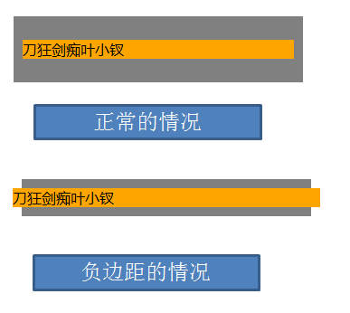
所以，我们平时操作负边距时候，其实是增加了高宽，若是高宽确定的情况下，那边是其他几个属性被增加了，带来了元素移动的错觉。
垂直格式化
块级元素的高度默认由其内容决定，我们可以为元素显示设置高度，但是这样的话，元素框便不会自动增加了。
垂直居中
在水平情况下设置auto后，会取相同的值，当在垂直情况下，情况有所不同，margin: auto 0;这种情况下，上下外边距会被重置为0，元素框失去了外边距（定位元素有所不同）。
<div style=" margin: 20px auto; width: 300px; height: 200px; background: gray; padding: 10px; position: relative;"> <p style=" background-color: Orange; width: 130px; height: 20px; margin: auto; position: absolute; "> 刀狂剑痴叶小钗</p> </div>
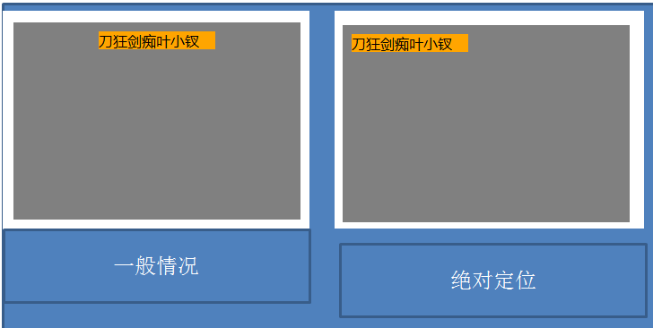
外边距合并
外边距合并的问题大家都知道，上下外边距会发生合并现象，但是有种情况会让事情变得比较复杂：

<html xmlns="http://www.w3.org/1999/xhtml"> <head> <title></title> <style type="text/css"> body { background: #ECECEC; } .outer { background: white; border: 1px solid #CCCCCC; width: 300px; } .inner { margin: 10px; padding: 8px; background: none repeat scroll 0 0 #1C87D5; color: white;} </style> </head> <body> <div class="outer"> <h1 class="inner"> 来个测试走</h1> </div> </body> </html>
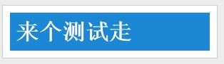
若是我们将代码做一点改变：“将外层元素border”去掉；那么。。
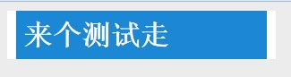
他这种合并方法就彻底让我傻眼了。。。。。
以上是之前的研究，很浅的介绍了一下我们的块级元素，今天我们来看看其它东西。
block与position
单说块级元素其实意义不大，前面部分可能的说的七七八八了，单说块级元素师应该用以布局的，所以position才是block的战场。
position有这么多值：
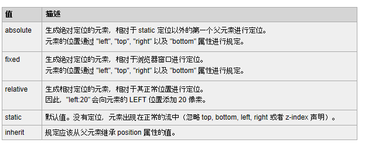
其中static便是默认值，这样的块级元素在文档流之中，我们暂时不予关注，我们来看看其它的东西。
昨天我们说到行内元素与float时，我们认为float是白蚁，而absolute是会飞的白蚁（会飞的inline-block），他们会破坏会重建，所以我们首先看看这个例子：
1 <div>我在之前</div> 2 <div style="background-color: Gray; padding: 10px; margin: 10px;"> 3 刀狂剑痴叶小钗是男儿</div> 4 <div>我在之后</div>
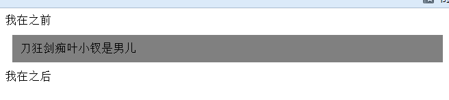
毫无疑问的占满了一行，于是我们将之布局改一下下：
1 <div>我在之前</div> 2 <div style="background-color: Gray; padding: 10px; margin: 10px; position: absolute;"> 3 刀狂剑痴叶小钗是男儿</div> 4 <div>我在之后</div>
这里无论是absolute或者fixed，他的高与宽都被先破坏然后在重建了同一道理（XX膜破坏与修复），但是他已不食人间烟火，和我们正常留不属于同一纬度啦：
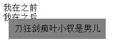
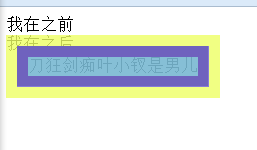
relative
relative就跟七仙女一样，他虽然可以飞，虽然是神仙，但是他在人间还有一个家，所以其文档布局还在：
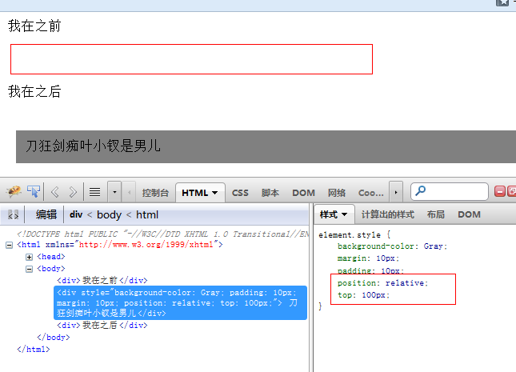
绝对定位的破坏性
我们昨天看了float的破坏性，今天连着绝对定位的一起看看呗，看看谁更厉害：
① imgfloat引起父元素高度坍塌
<div style="background-color: Gray; padding: 10px; "> <img src="1.png" style=" float: left; " /></div>
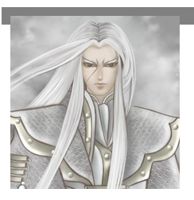
② 父元素漂浮拯救自我坍塌
<div style="background-color: Gray; padding: 10px; float: left; "> <img src="1.png" style=" float: left; " /></div>
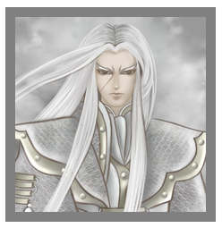
③ 绝对元素引起父元素升天
<div style="background-color: Gray; padding: 10px; "> <img src="1.png" style=" position: absolute; " /></div>
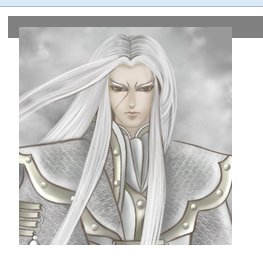
④ 父元素漂浮能否拯救子元素？
<div style="background-color: Gray; padding: 10px; float: left; "> <img src="1.png" style=" position: absolute; " /></div>
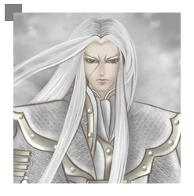
事实证明，他若要走，谁都拦不住啊！！
PS：此处absolute与fixed是表现一致的。
绝对定位的位置
绝对定位的元素一般情况下还是应该放到body后面的。
不要为了实现一个下拉菜单的功能而把它搞到dom（表格神马的）里面，越深的dom回流越厉害
而且仅仅为了实现一个下拉操作，可能还需要将父标签设置为relative，得不偿失啊！
如此一来，z-index引起的bug也不会出现了，以下是我用到的一点东西：
里面的提示信息就完全在body里面，不用relative限制依旧可以实现的。
然后，若是绝对定位元素不在body后面而是需要在某些dom节点中才能实现其效果的话，dom节点浅还不用说，深的话就要考虑是否有其它方案了。
优化之元素隐藏
元素隐藏我们用的最多的一定是display属性，但是他不一定是最好的实现方案。为什么这么说呢？
我这里有一个明确的体会，就是前段时间一个需求，我的广告div标签在最前面，他的背景是图片，我原想开始隐藏将图片加载完成，后面慢慢展示实现特效，但是背景在display: none的情况下根本不会加载的！！！
也许我们这里可以以此特性搞个延迟加载的其它方案实现，但是若是这个家伙可能引起回流与渲染哦！！！！
以上和这一小节的东西扯得有点远，我们还是来看看我们的隐藏吧。
我所用到以absolute做的隐藏有以下几种：
<div> 我在之前</div> <div style="background-color: Gray; padding: 10px; margin: 10px; position: absolute; top: -9999px;"> 刀狂剑痴叶小钗是男儿 </div> <div> 我在之后</div>
<div> 我在之前</div> <div style="background-color: Gray; padding: 10px; margin: 10px; position: absolute; visibility: hidden; "> 刀狂剑痴叶小钗是男儿 </div> <div> 我在之后</div>
我暂时就用到了这两种方式，尤其是第二种用得较多，腾讯微博的下拉菜单也是这么干的。
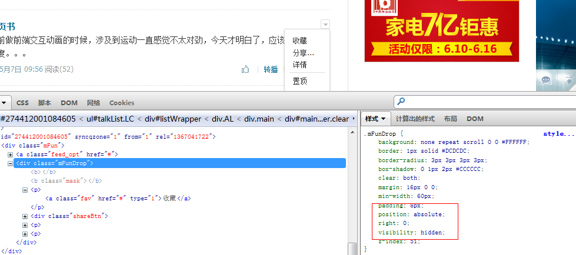
两栏等高布局
两栏等高布局是非常常用的，也是面试题经常中的，我们可能这样做：
1 <div style="overflow: hidden;"> 2 <div style="float: left; width: 300px; background-color: Orange; margin-bottom: -3000px; 3 padding-bottom: 3000px;"> 4 边栏</div> 5 <div style="margin-left: 310px; background-color: Gray; margin-bottom: -3000px; padding-bottom: 3000px;"> 6 主区域</div> 7 </div>
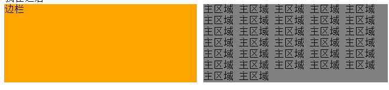
其实这个代码是不好的，因为不是内容优秀的做法，我们应该将主要内容标签提前。
这个实现原理其实是非常巧妙的：
因为padding是包括背景色的，而外层高度的计算方式我们知道是margin+padding+border+height。
所以事实上，我们这里元素其实已经延伸了3000px了，但是由于overflow: hidden，由于margin，其高度其实是没有的，我们一旦设置高度就会撑开父元素，无论怎么撑开其两边背景都是存在的，所以貌似等高，其实没有等高了。。。
然后，我们现在知道了绝对定位的元素无高度，无宽度，那么我们是不是也可以用它实现呢？
其实我们可以设置一个absolute/fxied的东东摆在中间就实现啦。。。。
<div style="position: relative; overflow: hidden; background-color: Gray;"> <div style="width: 300px; background-color: Orange; position: absolute; height: 3000px; z-index: 1;"> </div> <div style="width: 300px; float: left; position: relative; z-index: 2; "> 边栏</div> <div style="margin-left: 310px; background-color: Gray;"> 主区域</div> </div>
代码有点恶心，大家不必细看。。。
block与relative的故事
之前我们就说了relative是七仙女，虽然可以飞，但是编制在人间。
relative因为是七仙女就具有z-index特性，可以垂直升空。
relative因为是玉帝的女儿，权限很大，所以被他包裹着的神仙absolute都飞不出他的区域。。。
IE6与relative的爱情故事
ie7以下有个严重的bug，就是z-index需要依赖其父元素的z-index才行，否则儿子再高，但是父元素低，他依旧会被别人挡着。
这个问题我之前讨论过，这里就不管他了。
这是一个例子
之前，我们为了实现一个功能：广告得出现在屏幕的中间，我开始任务这个东西很简单便没有关注，但后面点看到了一个实现：
在body后面加了一个div，而且这个div有一个属性：
<div style=" position: relative;"></div>
然后用这个div包裹着了所有其它标签。
我一看其实有点傻了的。因为这将影响很大，最严重的情况是页面布局全部坏了!
这里我就想给我们的前端规范加上一条：相对定位一点要最小的影响。
这样做是有道理也有原因的，是想其中若是出现其他定位元素，岂不是会发现悲剧。
一个形象的例子，relative要对其下的布局元素负责，我们运用了此元素，就得负责下面所有的布局元素的展示，一个考虑不到就要悲剧。
结语
今天我们一起学习了块级元素的东东，后面点继续学习CSS与bootstrap吧。各位端午节快乐。
参考：